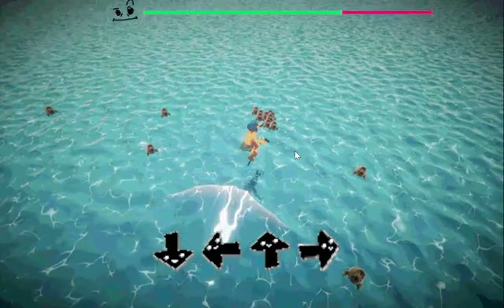
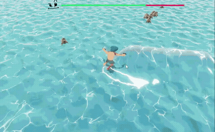

Tip: use the in-game fullscreen button once it loads for the best view.
Poseidon Skate
A hyper-casual game about skating across open water and shooting down enemies while waves and waterspouts spawn automatically around you. Landing the QTE prompts they trigger temporarily powers up your weapon.
Key Features
- Waves and waterspouts spawn automatically, reshaping the arena as you play
- Gun-based combat while skating across open water
- QTE prompts tied to each wave that temporarily power up your weapon when landed
- Arcade-style combos — chain successful tricks for a rising-pitch chime and a crowd cheer
My Role
Within PASSION DIFF, I owned the enemy and combat systems end to end:
- Enemy spawning — in waves and continuously across open water, tracking health and damage
- Auto-targeting combat — driving the player's attacks against whatever's in range
- The tornado trick — a second QTE reward with its own scripted spiral-ride animation and launch physics
- The full audio system, built from scratch, including a combo chime that climbs in pitch with each trick streak
Controls
- Auto-forward movement — you're always skating ahead
- A / D or ← / → — steer
- Space — jump
Core Loop
Skate open water auto-attacking whatever's in range, then catch a wave or tornado and land its QTE for a damage payoff before the next threat surfaces.
Why
I wanted something hyper-casual — an endless surfing game where you don't aim, just skate while auto-attacking whatever's near as enemies swarm nonstop, then land a trick within a window to chain into an escalating combo finisher. The tornado leans into that further: a much higher launch than the wave, with no cap on the trick chain.
Gameplay


Design: Two Power-Ups, One Reflex
Wave and tornado are reward triggers, both built around the same one QTE input. The system around that single reflex is where the combat design lives.
The Reward
Always a Reward
Wave and tornado can't hurt you — you're invincible through the whole trick, even if you whiff it, like Mario's ? block.
I wanted hitting one to feel satisfying — so the tornado's own QTE is tuned even easier despite its bigger payout.
Auto-Combat Keeps Hands on Steering
Combat has no aim or fire button — your weapon auto-attacks whatever's in range while your hands stay on steering and jump.
Keeps the whole game down to two active inputs, with the QTE as the one moment that asks for more.
The Combo
Landing Fires Off the Combo
Landing cashes in everything you've built — the streak converts straight into the payoff. A mid-air mistake resets it too, but earns nothing.
The risk in the system is getting caught mid-chain, not finishing one.
Fixing a Launch That Depended on Luck
The tornado's first launch was a single physics impulse, and a head-on hit resolved almost flat — so most launches barely went anywhere.
A scripted spiral ride now carries the player up before the real launch, so the trick feels the same no matter the hit angle.
Wave vs. Tornado
| Wave | Tornado | |
|---|---|---|
| Launch height | Baseline | Much higher |
| Trick chain | Capped | Uncapped |
| QTE difficulty | Standard | Easier |
| Role in the loop | Primary reward, every run | Rarer reward, bigger payout |
Same reflex, an easier QTE — the tornado trades difficulty for a bigger payout.
From the GDD: QTE Weapon Buff System
Unlike the jam game, this one has a real design doc — "QTE Weapon Buff System," written under the project's internal title, Trident Skater. The numbers below are straight out of it.
Four Sets, Shrinking Windows
A trick chain is up to four QTE sets back to back. Each set adds four more directional inputs on top of the last — while the time allowed to land them keeps shrinking.
| Set | Inputs | Base time | Chained-jump bonus | Grade |
|---|---|---|---|---|
| Set 1 | 4 | 2.5s | 5.0s | OK |
| Set 2 | 8 | 2.0s | 4.0s | Good |
| Set 3 | 12 | 1.5s | 3.0s | Nice |
| Set 4 | 16 | 1.0s | 2.0s | Excellent |
Chaining a manual jump the instant you exit a big wave or finish a rail/half-pipe/stairs doubles that set's time limit and launches you higher — the design's one comeback mechanic for a set that's about to time out.
One Landing, Two Judgments
Landing draws a shadow decal where you're about to come down, with a tiny center dot inside it. The shadow's full radius deals AoE damage and knockback; anything caught exactly on that center dot dies instantly, regardless of HP.
Behind the Scenes
Two pieces of the real C# implementation behind the tornado trick and the combo chime described above.
Movement.cs
The scripted spiral ride mentioned above. The original tornado launch was a single physics impulse — PhysX resolves a head-on hit almost entirely horizontally, so it barely launched at all. This rides the player up the tornado's surface on a kinematic helix instead (one ease-in animation curve drives the turn rate and climb rate together) before handing off to the actual launch, so it no longer depends on the angle of the hit.
IEnumerator RideTornadoSpiral(TornadoGenerator tornado)
{
_ridingTornadoSpiral = true;
_rb.isKinematic = true;
VisualOverrideActive = true;
// ...
float duration = Mathf.Max(_tornadoSpiralDuration, 0.0001f);
float elapsed = 0f;
int revolutionsPlayed = 0;
while (elapsed < duration)
{
elapsed += Time.deltaTime;
float t = _tornadoSpiralCurve.Evaluate(Mathf.Clamp01(elapsed / duration));
// _tornadoSpiralCurve eases in, so revolutions complete faster near the end - counting whole
// revolutions off t (rather than a fixed timer) keeps the whoosh in sync with that.
int revolutionsSoFar = Mathf.FloorToInt(Mathf.Abs(_tornadoSpiralRevolutions) * t);
if (revolutionsSoFar > revolutionsPlayed)
{
revolutionsPlayed = revolutionsSoFar;
AudioManager.Instance?.PlayTornadoWhoosh();
}
float angleDeg = startAngle + 360f * _tornadoSpiralRevolutions * t;
float angleRad = angleDeg * Mathf.Deg2Rad;
float radius = Mathf.Lerp(startRadius, endRadius, t);
float height = Mathf.Lerp(startHeight, targetHeight, t);
Vector3 nextPos = axisCenter + new Vector3(Mathf.Cos(angleRad) * radius, height, Mathf.Sin(angleRad) * radius);
_rb.MovePosition(nextPos);
yield return null;
}
_rb.isKinematic = false;
VisualOverrideActive = false;
LaunchTornado();
_ridingTornadoSpiral = false;
}AudioManager.cs
The rising-pitch combo chime mentioned above. Every consecutive trick success reuses the same clip pitched one step higher than the last, so a clean streak audibly climbs — a mistake breaks the chain, not landing, so a combo can span multiple jumps in a row.
// Rising-pitch combo chime: every consecutive trick success reuses the same clip but one
// pitch step higher than the last, so a chain of successes audibly climbs instead of just repeating
// - a mistake (see HandleTrickMistake) is what breaks the chain, not landing, so combos can span
// multiple jumps as long as the player keeps landing tricks clean.
public void PlayTrickSuccessChime()
{
if (_trickSuccessClip == null || _comboSource == null) return;
_comboSource.pitch = Mathf.Min(1f + _comboStreak * _comboPitchStep, _comboPitchMax);
_comboSource.PlayOneShot(_trickSuccessClip);
_comboStreak++;
}
public void ResetTrickCombo()
{
_comboStreak = 0;
}
// Called on landing (see Movement.IsGrounded) rather than folded into ResetTrickCombo - a mid-air
// mistake also resets the streak, and that's a failure, not something to cheer for.
public void OnPlayerLanded()
{
if (_comboStreak >= _bigComboThreshold) PlaySfx(_bigComboCheerClip);
ResetTrickCombo();
}